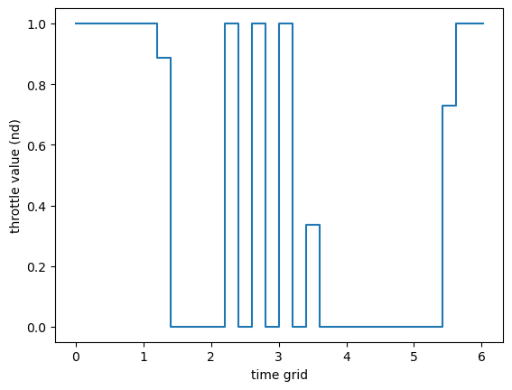
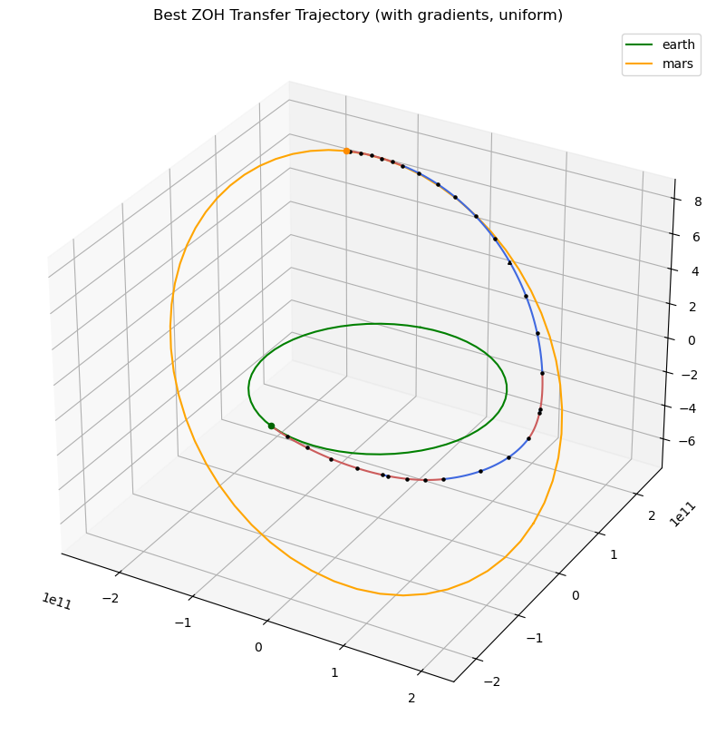
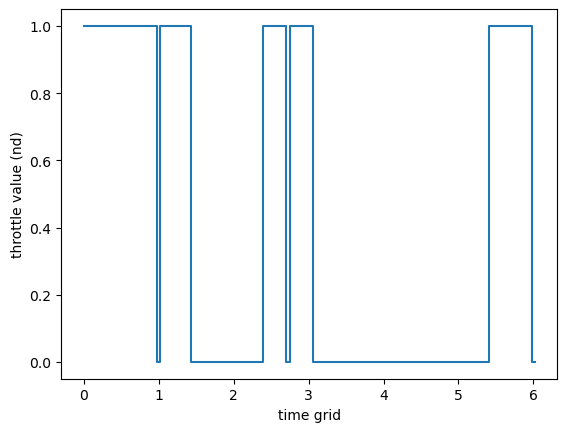

Zero Order Hold: planet to planet low thrust transfer#
In this tutorial we demonstrate the use of the zoh_pl2pl class to find a low-thrust trajectory connecting two moving planets using the Zero-Order Hold (ZOH) direct method with free departure and arrival velocities.
Key Features#
The zoh_pl2pl class offers several features that make it a powerful tool for low-thrust trajectory optimization:
Free departure and arrival velocities - The spacecraft can depart and arrive with excess velocity relative to the planets
Non-dimensional formulation - Works internally with non-dimensional units for better numerical conditioning
Taylor-adaptive integration - Uses heyoka as Taylor propagator for accurate trajectory propagation
Analytical gradients - Optional analytical gradient computation for faster optimization
Flexible time encoding - Supports both
uniformandsoftmaxtime grid encodings
Decision Vector#
The decision vector for this class is:
Where:
\(t_0\) is the departure epoch (MJD2000, in days)
\(m_f\) is the final spacecraft mass (non-dimensional)
\(v^{\infty}_{\text{dep/arr}}\) are the magnitudes of departure/arrival excess velocities (non-dimensional)
\(\hat{i}_{\text{dep/arr}}\) are unit direction vectors for the excess velocities
controls = \([T, \hat{i}_x, \hat{i}_y, \hat{i}_z] \times n_{\text{seg}}\) where \(T\) is thrust magnitude and \(\hat{i}\) is thrust direction
\(T_{\text{tof}}\) is the time of flight (non-dimensional)
\(\mathbf{w}\) are softmax weights (only for softmax encoding)
Note
This notebook can use the commercial solver SNOPT 7 or the open-source IPOPT solver. Both are demonstrated below.
Basic Imports#
import pykep as pk
import numpy as np
import time
import pygmo as pg
try:
import pygmo_plugins_nonfree as ppnf
has_snopt = True
except:
has_snopt = False
print("SNOPT not available, will use IPOPT instead")
from matplotlib import pyplot as plt
Problem Definition#
We define the problem parameters including planets, spacecraft characteristics, and non-dimensional scaling factors.
# Problem data
mu = pk.MU_SUN
max_thrust = 0.6
isp = 3000
veff = isp * pk.G0
# Initial mass
ms = 1500.0
# Number of segments
nseg = 30
# Non dimensional units
L = pk.AU
MU = mu # (central body mu must be 1 in these units as a requirement of the ZOH integrator used)
TIME = np.sqrt(L**3 / MU)
V = L / TIME
ACC = V / TIME
MASS = ms
F = MASS * ACC
ms_nd = ms / MASS
# Source and destination planets
earth = pk.planet_to_keplerian(
pk.planet(pk.udpla.jpl_lp(body="EARTH")),
when=pk.epoch(5000),
)
mars = pk.planet_to_keplerian(
pk.planet(pk.udpla.jpl_lp(body="MARS")),
when=pk.epoch(5000),
)
# Low tolerances result in higher speed (the needed tolerance depends on the orbital regime)
tol = 1e-10
tol_var = 1e-6
# We instantiate ZOH Taylor integrators for Keplerian dynamics.
ta = pk.ta.get_zoh_kep(tol)
ta_var = pk.ta.get_zoh_kep_var(tol_var)
# We set the Taylor integrator parameters
veff_nd = veff / V
# Creating Taylor-Adaptive Integrators
# The ZOH method requires Taylor-adaptive integrators for high-precision trajectory propagation. We create two integrators:
# 1. Nominal dynamics integrator (for fitness evaluation)
# 2. Variational dynamics integrator (for gradient computation)
ta.pars[4] = 1.0 / veff_nd
ta_var.pars[4] = 1.0 / veff_nd
print(f"Nominal integrator state dimension: {len(ta.state)}")
print(f"Variational integrator state dimension: {len(ta_var.state)}")
Nominal integrator state dimension: 7
Variational integrator state dimension: 84
udp_uniform = pk.trajopt.zoh_pl2pl(
pls=earth,
plf=mars,
ms=ms_nd,
nseg=nseg,
cut=0.6,
t0_bounds=[7360, 8300.0],
tof_bounds=[100.*pk.DAY2SEC/TIME, 350.*pk.DAY2SEC/TIME],
mf_bounds=[2/3,1.],
vinf_dep_bounds = [0., 0.],
vinf_arr_bounds = [0., 0.],
tas = (ta,None),
max_thrust=max_thrust/F,
# w_bounds_softmax=[-1., 1.],
time_encoding='uniform',
)
udp_g_uniform = pk.trajopt.zoh_pl2pl(
pls=earth,
plf=mars,
ms=ms_nd,
nseg=nseg,
cut=0.6,
t0_bounds=[7360, 8300.0],
tof_bounds=[100.*pk.DAY2SEC/TIME, 350.*pk.DAY2SEC/TIME],
mf_bounds=[2/3,1.],
vinf_dep_bounds = [0., 0.],
vinf_arr_bounds = [0., 0.],
tas = (ta,ta_var),
max_thrust=max_thrust/F,
# w_bounds_softmax=[-1., 1.],
time_encoding='uniform',
)
print("UDP instances created successfully")
print(f"With gradient: {udp_g_uniform.has_gradient()}")
print(f"Without gradient: {udp_uniform.has_gradient()}")
UDP instances created successfully
With gradient: True
Without gradient: False
Part 1: Gradient vs No-Gradient Comparison#
We first compare the performance of the UDP with and without analytical gradients. Both use uniform time encoding.
Gradient Performance Analysis#
Let’s compare the performance of analytical gradients versus numerical gradients. The analytical gradients use variational equations integrated alongside the dynamics, providing exact derivatives.
# Create a problem and population to test gradient
prob_g = pg.problem(udp_g_uniform)
pop_g = pg.population(prob_g, 1)
x_test = pop_g.champion_x
print("\n=== Gradient Performance Comparison ===")
print(f"\nDecision vector dimension: {len(x_test)}")
print(f"Fitness dimension: {len(prob_g.fitness(x_test))}")
print("\nAnalytical gradient (from variational equations + chain rule):")
%timeit udp_g_uniform.gradient(x_test)
print("\nNumerical gradient (simple finite difference):")
%timeit pg.estimate_gradient(udp_g_uniform.fitness, x_test)
print("\n✓ The analytical gradient is significantly faster!")
=== Gradient Performance Comparison ===
Decision vector dimension: 131
Fitness dimension: 40
Analytical gradient (from variational equations + chain rule):
1.14 ms ± 23.1 μs per loop (mean ± std. dev. of 7 runs, 1,000 loops each)
Numerical gradient (simple finite difference):
39.4 ms ± 72.8 μs per loop (mean ± std. dev. of 7 runs, 10 loops each)
✓ The analytical gradient is significantly faster!
Solving with and without Gradients#
Now we solve the optimization problem using both approaches to compare convergence.
# Setup optimization algorithm
if has_snopt:
# Use SNOPT if available
library_snopt72 = "/Users/dario.izzo/opt/libsnopt7_c.dylib"
uda = ppnf.snopt7(library=library_snopt72, minor_version=2, screen_output=False)
uda.set_integer_option("Major iterations limit", 1000)
uda.set_integer_option("Iterations limit", 10000)
uda.set_numeric_option("Major optimality tolerance", 1e-3)
uda.set_numeric_option("Major feasibility tolerance", 1e-9)
algo_name = "SNOPT7"
else:
# Use IPOPT as fallback
uda = pg.ipopt()
uda.set_numeric_option("tol", 1e-8)
uda.set_numeric_option("constr_viol_tol", 1e-8)
uda.set_integer_option("max_iter", 2000)
algo_name = "IPOPT"
algo = pg.algorithm(uda)
print(f"Using {algo_name} optimizer")
Using SNOPT7 optimizer
Optimization with Gradients#
# Solve with gradients
prob_g_uniform = pg.problem(udp_g_uniform)
prob_g_uniform.c_tol = 1e-6
print("\n=== Optimization WITH Gradients (Uniform) ===")
masses = []
xs=[]
for i in range(10):
pop_g = pg.population(prob_g_uniform, 1)
pop_g = algo.evolve(pop_g)
if(prob_g_uniform.feasibility_f(pop_g.champion_f)):
print(".", end="")
masses.append(pop_g.champion_x[1])
xs.append(pop_g.champion_x)
else:
print("x", end ="")
print("\nBest mass is: ", np.max(masses)*MASS)
print("Worst mass is: ", np.min(masses)*MASS)
best_idx = np.argmax(masses)
=== Optimization WITH Gradients (Uniform) ===
---------------------------------------------------------------------------
ValueError Traceback (most recent call last)
Cell In[6], line 11
9 for i in range(10):
10 pop_g = pg.population(prob_g_uniform, 1)
---> 11 pop_g = algo.evolve(pop_g)
12 if(prob_g_uniform.feasibility_f(pop_g.champion_f)):
13 print(".", end="")
ValueError:
function: evolve_version
where: /home/conda/feedstock_root/build_artifacts/pygmo_plugins_nonfree_1773729372502/work/src/snopt7.cpp, 603
what:
An error occurred while loading the snopt7_c library at run-time. This is typically caused by one of the following
reasons:
- The file declared to be the snopt7_c library, i.e. /Users/dario.izzo/opt/libsnopt7_c.dylib, is not a shared library containing the necessary C interface symbols (is the file path really pointing to
a valid shared library?)
- The library is found and it does contain the C interface symbols, but it needs linking to some additional libraries that are not found
at run-time.
We report the exact text of the original exception thrown:
function: evolve_version
where: /home/conda/feedstock_root/build_artifacts/pygmo_plugins_nonfree_1773729372502/work/src/snopt7.cpp, 553
what: The snopt7_c library path was constructed to be: /Users/dario.izzo/opt/libsnopt7_c.dylib and it does not appear to be a file
Optimization without Gradients#
prob_uniform = pg.problem(udp_uniform)
prob_uniform.c_tol = 1e-6
print("\n=== Optimization WITHOUT Gradients (Uniform) ===")
masses_no_grad = []
for i in range(10):
pop = pg.population(prob_uniform, 1)
pop = algo.evolve(pop)
if(prob_uniform.feasibility_f(pop.champion_f)):
print(".", end="")
masses_no_grad.append(pop.champion_x[1])
else:
print("x", end ="")
print("\nBest mass is: ", np.max(masses_no_grad)*MASS)
print("Worst mass is: ", np.min(masses_no_grad)*MASS)
=== Optimization WITHOUT Gradients (Uniform) ===
..x.x.....
Best mass is: 1233.19966226
Worst mass is: 1216.47963104
if len(xs) > 0:
fig = plt.figure(figsize=(10, 10))
ax = fig.add_subplot(111, projection='3d')
t0 = udp_g_uniform.compute_t0(xs[best_idx])
ax=pk.plot.add_planet_orbit(ax=ax, pla=earth, label='earth', units=1., color='green')
ax=pk.plot.add_planet_orbit(ax=ax, pla=mars, label='mars', units=1., color='orange')
ax = udp_g_uniform.plot(xs[best_idx], ax=ax, N=20, c='k', s=5)
ax=pk.plot.add_planet(ax=ax, when=t0, pla=earth, units=1., color='darkgreen', s=20)
ax=pk.plot.add_planet(ax=ax, when=t0+xs[best_idx][10+4*udp_g_uniform.nseg]*udp_g_uniform.TIME/pk.DAY2SEC, pla=mars, units=1., color='darkorange', s=20)
ax.set_title("Best ZOH Transfer Trajectory (with gradients, uniform)")
ax.legend()
udp_g_uniform.plot_throttle(xs[best_idx])
<Axes: xlabel='time grid', ylabel='throttle value (nd)'>

Part 2: Time Encoding Comparison (Uniform vs Softmax)#
Now we compare the two time encoding methods: uniform and softmax.
Time Encoding Explanation#
Uniform Encoding: Time grid nodes are evenly spaced from 0 to TOF: $\(t_i = \frac{i \cdot T_{\text{tof}}}{n_{\text{seg}}}, \quad i = 0, 1, ..., n_{\text{seg}}\)$
Softmax Encoding: Time grid nodes are determined by learnable weights \(\mathbf{w}\): $\(\Delta t_i = T_{\text{tof}} \cdot \text{softmax}(\mathbf{w})_i, \quad t_i = \sum_{j=0}^{i-1} \Delta t_j\)$
The softmax encoding adds \(n_{\text{seg}}\) additional decision variables but allows the optimizer to adaptively distribute time where it’s most needed.
For a better discussion on the softmax encoding see also the tutorial: udp_zoh_point2point.ipynb.
Create UDP with Softmax Encoding#
udp_g_softmax = pk.trajopt.zoh_pl2pl(
pls=earth,
plf=mars,
ms=ms_nd,
nseg=nseg,
cut=0.6,
t0_bounds=[7360, 8300.0],
tof_bounds=[100.*pk.DAY2SEC/TIME, 350.*pk.DAY2SEC/TIME],
mf_bounds=[2/3,1.],
vinf_dep_bounds = [0., 0.],
vinf_arr_bounds = [0., 0.],
tas = (ta,ta_var),
max_thrust=max_thrust/F,
w_bounds_softmax=[-1., 1.],
time_encoding='softmax',
)
print("UDP with softmax encoding created successfully")
print(f"Decision vector size:")
print(f"With softmax: {len(udp_g_softmax.get_bounds()[0])} (includes softmax weights)")
print(f"Without softmax: {len(udp_g_uniform.get_bounds()[0])}")
UDP with softmax encoding created successfully
Decision vector size:
With softmax: 161 (includes softmax weights)
Without softmax: 131
Solve with Softmax Encoding#
#solve with gradients:
prob_g_softmax = pg.problem(udp_g_softmax)
prob_g_softmax.c_tol = 1e-6
print("\n=== Optimization WITH Gradients (Softmax) ===")
masses_softmax = []
xs_softmax = []
for i in range(10):
pop_g_sm = pg.population(prob_g_softmax, 1)
pop_g_sm = algo.evolve(pop_g_sm)
if(prob_g_softmax.feasibility_f(pop_g_sm.champion_f)):
print(".", end="")
masses_softmax.append(pop_g_sm.champion_x[1])
xs_softmax.append(pop_g_sm.champion_x)
else:
print("x", end ="")
print("\nBest mass is: ", np.max(masses_softmax)*MASS)
print("Worst mass is: ", np.min(masses_softmax)*MASS)
best_idx_sm = np.argmax(masses_softmax)
=== Optimization WITH Gradients (Softmax) ===
x.....xx.x
Best mass is: 1233.65545015
Worst mass is: 1215.44188073
Display Best Solution with Softmax#
if len(xs) > 0:
fig = plt.figure(figsize=(10, 10))
ax = fig.add_subplot(111, projection='3d')
t0 = udp_g_softmax.compute_t0(xs_softmax[best_idx_sm])
ax=pk.plot.add_planet_orbit(ax=ax, pla=earth, label='earth', units=1., color='green')
ax=pk.plot.add_planet_orbit(ax=ax, pla=mars, label='mars', units=1., color='orange')
ax = udp_g_softmax.plot(xs_softmax[best_idx_sm], ax=ax, N=20, c='k', s=5)
ax=pk.plot.add_planet(ax=ax, when=t0, pla=earth, units=1., color='darkgreen', s=20)
ax=pk.plot.add_planet(ax=ax, when=t0+xs_softmax[best_idx_sm][10+4*udp_g_softmax.nseg]*udp_g_softmax.TIME/pk.DAY2SEC, pla=mars, units=1., color='darkorange', s=20)
ax.set_title("Best ZOH Transfer Trajectory (with gradients, uniform)")
ax.legend()

udp_g_softmax.pretty(xs_softmax[best_idx_sm])
Low-thrust ZOH transfer (free velocities, non-dimensional formulation)
Departure: earth(jpl_lp)(K)
Arrival: mars(jpl_lp)(K)
Launch epoch: 7452.11748 MJD2000, a.k.a. 2020-05-27T02:49:10.229252
Arrival epoch: 7802.11748 MJD2000, a.k.a. 2021-05-12T02:49:10.229252
Time of flight: 6.02073 (nd), 350.00000 days
Departure excess velocity:
Magnitude: 0.000000 (nd), 0.000000 km/s
Vector (nd): [0.000000, -0.000000, 0.000000]
Vector (km/s): [0.000000, -0.000000, 0.000000]
Direction: [0.738962, -0.026113, 0.673240], norm: 1.000000
Arrival excess velocity:
Magnitude: 0.000000 (nd), 0.000000 km/s
Vector (nd): [-0.000000, 0.000000, -0.000000]
Vector (km/s): [-0.000000, 0.000000, -0.000000]
Direction: [-0.728527, 0.489609, -0.479094], norm: 1.000000
Final mass: 0.822437 (nd)
Scaling factors: L=149.598 Gm, V=29.785 km/s, TIME=58.132 days
Details on the ZOH leg:
<pykep.leg._zoh.zoh object at 0x31ff20ad0>
udp_g_softmax.plot_throttle(xs_softmax[best_idx_sm])
<Axes: xlabel='time grid', ylabel='throttle value (nd)'>
